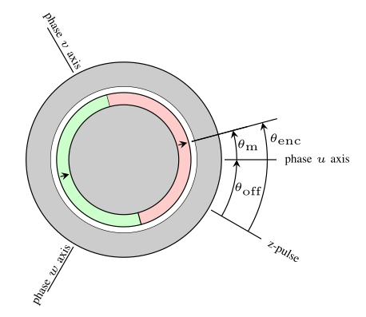
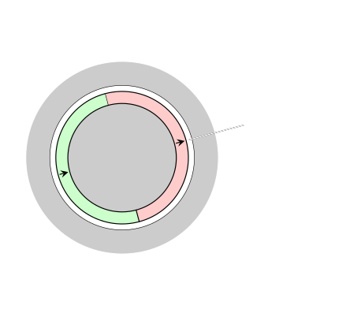
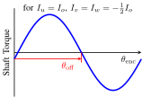
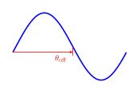
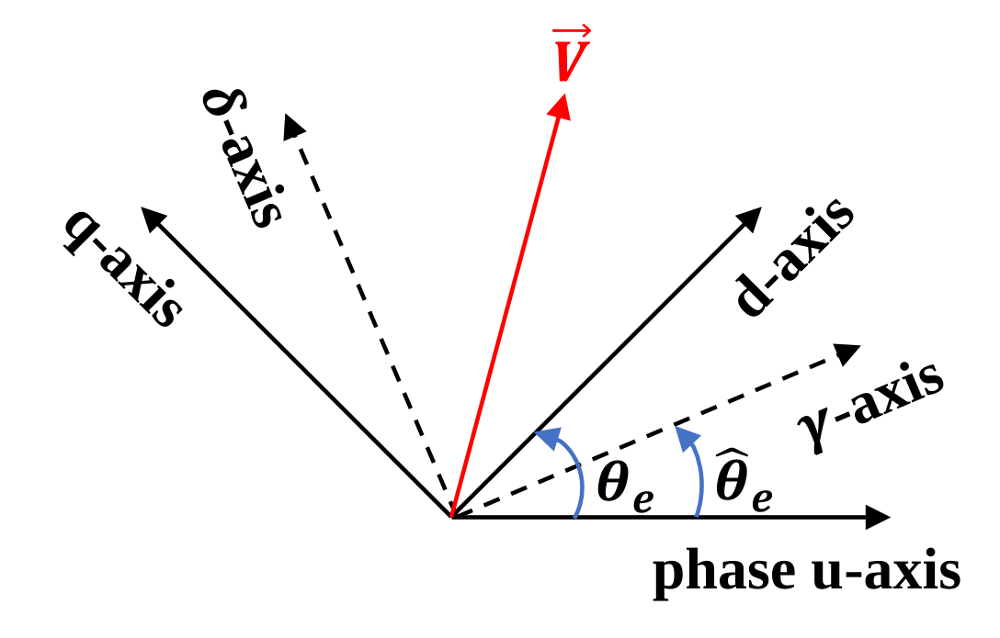
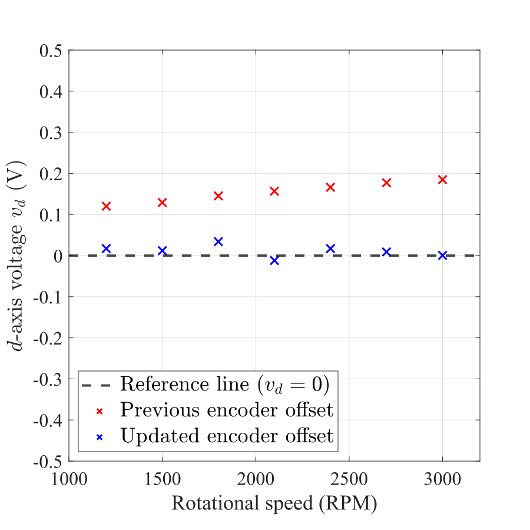

Encoder Feedback¶
Background¶
Encoders are used to determine the rotor position and speed, and are the typical method of feedback to the control system in a motor drive. This document explains how to use the AMDC’s encoder interface to extract high quality rotor position and speed data.
For more information:
on how encoders work and are interfaced with the AMDC, see the encoder hardware subsystem page;
on the driver functionality included with the AMDC firmware, see the encoder driver architecture page.
Rotor Position¶
The AMDC supports incremental encoders with quadrature ABZ outputs and a fixed number of counts per revolution CPR (for example, CPR = 1024). The user needs to provide code that interfaces to the AMDC’s drivers to read the encoder count and convert it into usable angular information that is suitable for use within the control code.
{kind=link}

{kind=link}

This document assumes the configuration shown to the right, where the control code expects a measurement of the angle of the rotor’s north pole relative to the phase \(u\) magnetic axis, labeled as a mechanical angle \(\theta_{\rm m}\). The encoder provides \(\theta_{\rm enc}\), which is the number of counts since the last z-pulse. The user’s code needs to convert \(\theta_{\rm enc}\) (in units of counts) into \(\theta_{\rm m}\) (likely in units of radians) and handle an offset angle \(\theta_{\rm off}\) between the encoder’s 0 position and the phase \(u\) axis.
Configuring the encoder¶
Upon powerup, the AMDC configures the encoder to a default number of counts per revolution. This is handled in encoder.c as part of the standard firmware package. When using an encoder that has a different number counts per revolution, the user must inform the driver by calling encoder_set_counts_per_rev().
Example code for a 10 bit encoder:
#define USER_ENCODER_COUNTS_PER_REV_BITS (10)
#define USER_ENCODER_COUNTS_PER_REV (1 << USER_ENCODER_COUNTS_PER_REV_BITS)
int task_user_app_init(void)
{
encoder_set_counts_per_rev(USER_ENCODER_COUNTS_PER_REV);
// other user app one-time initialization code
// ...
Tip
The AMDC provides a convenience function that can be used as an alternate to encoder_set_counts_per_rev() when the encoder is specified as a number of bits: encoder_set_counts_per_rev_bits(USER_ENCODER_COUNTS_PER_REV_BITS).
Converting the encoder count into rotor position¶
The recommended approach to reading the shaft position from the encoder is illustrated in the figure below:
{kind=link}
{kind=link}
First, the AMDC drv/encoder driver module function encoder_get_position() is used to obtain the encoder’s count \(\theta_{\rm enc}\) since the last z-pulse.
Tip
The drv/encoder driver module also has a function called encoder_get_steps() which returns the encoder’s count since power-on. One rotation direction increments, the other decrements. This value does not wrap around (it ignores encoder_set_counts_per_rev() and the z-pulse). Users are advised to use encoder_get_position(), which does wrap around and tracks the z-pulse.
Next, the user should calculate \(\theta_{\rm m}\) from \(\theta_{\rm enc}\). This is done by 1) removing the offset and 2) converting counts into radians. For the angles defined as shown in the image above, this is simply calculated as
In this case, a counter-clockwise rotation of the rotor causes the \(\theta_{\rm enc}\) to increase. However, in some teststands a clockwise rotation causes \(\theta_{\rm enc}\) to increment. For these encoders, \(\theta_{\rm m}\) is calculated as
Tip
The user can experimentally determine whether the encoder count increases with counter-clockwise rotation of the shaft by rotating the shaft and using logging to observe the trend of \(\theta_{\rm enc}\).
Finally, the user must ensure that angle is within the bounds of \(0\) and \(2\pi\) by appropriately wrapping the \(\theta_{\rm m}\). This can be accomplished in C by using the mod function. This is shown in the final block in the diagram.
Here is example code to convert the encoder to angular position in radians (note that this assumes the encoder offset \(\theta_{\rm off}\) is already known; a procedure to determine this is described in the next subsection):
double task_get_theta_m(void)
{
// User to set encoder offset
double theta_off = 100;
// User to set encoder count per revolution
double ENCODER_COUNT_PER_REV = 1024;
// User to set 1 if encoder count increases with CCW rotation of shaft, set 0 if encoder count increases with CW rotation of shaft
int CCW_ROTATION_FLAG = 1;
// Angular position to be computed
double theta_m;
// Get raw encoder position
uint32_t theta_enc;
encoder_get_position(&theta_enc);
// Convert to radians
theta_m = (double) PI2 * ( ((double)theta_enc - theta_off) / (double) ENCODER_COUNT_PER_REV);
if (!CCW_ROTATION_FLAG){
theta_m = PI2 - theta_m;
}
// Mod by 2 pi
theta_m = fmod(theta_m,PI2);
return theta_m;
}
Finding the offset¶
The example code shown above makes use of an encoder offset value, theta_off. For synchronous machines, this offset is the count value measured by the encoder when the d-axis of the rotor is aligned with the phase U winding axis of the stator. This value typically needs to be found experimentally for each motor/encoder pair because it depends on how the encoder was aligned when it was coupled to the motor’s shaft. This section provides a procedure to determine theta_off.
Determine the approximate offset¶
{kind=link}

{kind=link}

The approximate encoder offset can be found by taking advantage of the motor having the torque characteristic shown on the right. This depicts shaft torque as the shaft is rotated counter-clockwise and corresponds to the image at the start of the section; positive torque is in the counter-clockwise direction.
The following simple procedure can be used without any feedback control:
Set the
theta_offto 0 in the control codetask_get_theta_m().Eliminate any source of load torque on the shaft.
Power on the AMDC and rotate the rotor manually by one revolution (so that the encoder z-pulse is detected).
Align the rotor with the phase U winding axis by applying a large current vector at 0 degrees (\(I_u = I_0\), \(I_v = I_w = -\frac{1}{2} I_0\)). This could be accomplished by:
Using a DC power supply, or
Injecting a current command on the d-axis using the AMDC Signal Injection module with
theta_mfixed to 0.
Record the current encoder position and use this as the offset value:
theta_off = encoder_get_position();.Update the variable
theta_offto the appropriate value intask_get_theta_m().
Determine precise offset¶
Friction and cogging torque in the motor can decrease the accuracy of the estimate in Finding the offset. A more precise offset can be found by fine-tuning the theta_off value while using closed-loop control to rotate the shaft at different speeds and monitoring the observed d-axis voltage.
{kind=link}

{kind=link}

The correct offset is determined by considering how errors in the measured rotor angle impact the current controller’s understanding of the \(\mathrm{d}-\mathrm{q}\) reference frame. This is depicted in the figure on the right, where:
\(\hat{\theta}_\mathrm{e}\) is the incorrect eletrical angle (due to error in offset \(\theta_\mathrm{off}\)) that the controller is using
the \(\gamma\)-\(\delta\) vectors indicate where the controller mistakenly understands the \(\mathrm{d}\)-\(\mathrm{q}\) frame to be located based on \(\hat{\theta}_\mathrm{e}\)
the \(\mathrm{d}\)-\(\mathrm{q}\) vectors and \(\theta_\mathrm{e}\) angle depict the actual \(\mathrm{d}\)-\(\mathrm{q}\) frame of the motor.
Note that \({\theta}_{\mathrm{e}} = p {\theta}_{\mathrm{m}}\) is the electrical angle where \(p\) is the number of pole-pairs of the motor and \(\omega_\mathrm{e} = \dot{\theta}_{\mathrm{e}}\) is the electrical angular velocity with units of radians per second.
The voltage vector of the motor terminals \(\vec{V}\) is shown in red and can be expressed in complex vector form as follows:
This voltage vector can be converted into the \(\gamma\)-\(\delta\) reference frame as follows.
When the current commands are set to \(\vec{i} = 0\), \(v_{\gamma}\) can be expressed as follows.
If there is no estimation error (i.e., \(\theta_\mathrm{e} - \hat{\theta}_\mathrm{e} = 0\)), the \(\gamma\)-\(\delta\) frame aligns with the \(\mathrm{d}\)-\(\mathrm{q}\) and the \(v_\mathrm{d}\) value seen by the controller should be zero. Based on this fact, the following procedure describes how to determine the encoder offset by finding the condition where \(v_\gamma=v_\mathrm{d} = 0\).
Configure the AMDC for closed-loop speed and DQ current control, and configure the operating environment to allow for quick edits to
theta_offand for measuring the d-axis voltage commanded by the current regulator. Consider adding a custom command and using logging to accomplish this.Command the motor to rotate at a steady speed under no-load conditions. Use the estimated
theta_offobtained in Finding the offset.Sweep
theta_offover a small range around the initial estimate (e.g., ±5 counts). For each value, monitor the d-axis voltage and find thetheta_offvalue that makes the d-axis voltage closest to 0 V. Identify this by observing when the sign of the d-axis voltage changes.Repeat step 3 at multiple rotor speeds. At each speed, record the
theta_offvalue that minimizes the d-axis voltage.Take the average of the collected
theta_offvalues from step 4 to determine the final encoder offset value.Plot the d-axis voltage with the final offset against the different rotor speeds. The d-axis voltage should be close to zero for all speeds if the offset is tuned correctly.
In case there is an error in the offset value, a significant speed-dependent voltage will appear on the d-axis voltage. In this case, the user may have to re-measure the encoder offset.
An example of the results is shown in the plot below. After the calibration process, the updated encoder offset results in the d-axis voltage being closer to 0 across different speeds compared to the previous value.
{kind=link}

Computing Speed from Position¶
Most motor control applications also require the user to compute rotor speed. This is typically done by processing the position signal. There are several ways to calculate speed from position, of varying acuracy and implementation complexity, and the most common approaches are now presented.
Difference Equation Approach¶
A simple, but naive, way to do this would be to compute the discrete time derivative of the position signal in the controller as shown below. This can be referred to as \(\Omega_\mathrm{raw}\).
Unfortunately, using this approach results in noise in \(\Omega_\text{raw}\) due to the derivative operation and the digital nature of the incremental encoder.
Low Pass Filter Approach¶
To solve this, a low pass filter may be applied to this signal. This is shown below to obtain a filtered speed, \(\Omega_\text{lpf}\).
Here, \(T_{\rm s}\) is the control sample rate and \(\omega_b\) is the low pass filter bandwidth. The user must select this bandwidth to obtain a sufficiently clean speed signal. The optimal bandwidth to use is going to vary based on the motor system. Typically, a bandwidth of 10 Hz is a reasonable starting point. This can be reduced if the speed signal remains too noisy, or increased for higher speed controls.
Note that this low pass filter approach will always produce a lagging speed estimate due to phase delay in the filter transfer function. This may be unacceptable higher performance motor control algorithms.
Observer Approach¶
To obtain a no-lag estimate of the rotor speed, users may create an observer [1], which implements a mechanical model of the rotor as shown below.
{kind=link}
{kind=link}

The estimate of rotor speed is denoted by \(\Omega_\text{sf}\). To implement this observer, the user needs to know the system parameters:
J: the inertia of the rotorbthe damping coefficient of the rotor.
It is also necessary to provide the electromechanical torque, \(T_\mathrm{em}\) as input to the mechanical model.
The PI portion of the observer closes the loop on the speed, with \(\Omega_\text{raw}\) being the reference input. The recommended tuning approach is as follows:
This tuning ensures a pole zero cancellation in the closed transfer function, resulting in a unity transfer function for speed tracking under ideal parameter estimates of J and b. An observer bandwidth of 10 Hz is typical of most systems, but similar to the low pass filter approach, users may need to alter this based on the unique aspects of their system.
References¶
R. D. Lorenz and K. W. Van Patten, “High-resolution velocity estimation for all-digital, AC servo drives,” in IEEE Transactions on Industry Applications, vol. 27, no. 4, pp. 701-705, July-Aug. 1991, doi: 10.1109/28.85485.